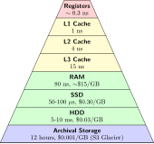
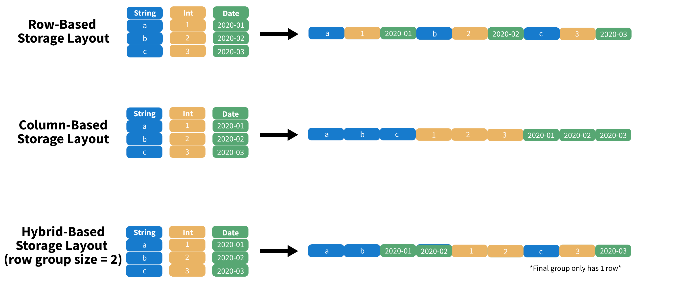

DSAN 6000: Big Data and Cloud Computing
Fall 2026
Monday, September 21, 2026

| Inherent ambiguities… | No built-in way to communicate schema info! | |
|---|---|---|
| Delimiter: Comma? Tab? Semicolon? | Schema information: Sent or looked up separately (codebooks) | |
Quote characters: Single ' or double " quote?ASCII "" or UTF-8 “”? |
Nested structures: …Improvised and included in schema |
|
Escaping special characters: \n = new line, or part of string val? |
||
\(\leadsto\) Data engineers working with CSV data have to build robust error detection systems to ensure data quality (Pydantic! Pandera!)
mean(), std(), max(), min(), etc…(df['y'] - df['y_pred']) ** 2.csv files are read row-by-rowdsan6000_staff.csv
…But Imagine A World Where… (John Lemon, from Beetles)
dsan6000_staff.csv
(Note: If you took DSAN 5000, you saw the skip list data structure… here we’re generalizing this to DataFrames!)
Now imagine a fancier header, with an index telling the reader the exact byte where each column starts:
| column name | column start |
|---|---|
staff_id |
0 |
last |
18 |
first |
50 |
points |
82 |
Even more efficient if we implement index as Binary Search Tree
If we did have a setup where we wanted to operate over rows, this optimized-index approach would work just as well!
Sorted Data:
staff_id: 1000 employees total, employee 500 starts at byte 820Time Series Data:
Binned Data: Last names N-Z start at byte 1130
1 → "jeff" → 300 → date(2023)date(2023) becomes (date(2023), 2000000) 🤯Hybrid Columnar/Row-Based Storage

From Berk (2022)
DSAN 6000 Week 4: DuckDB